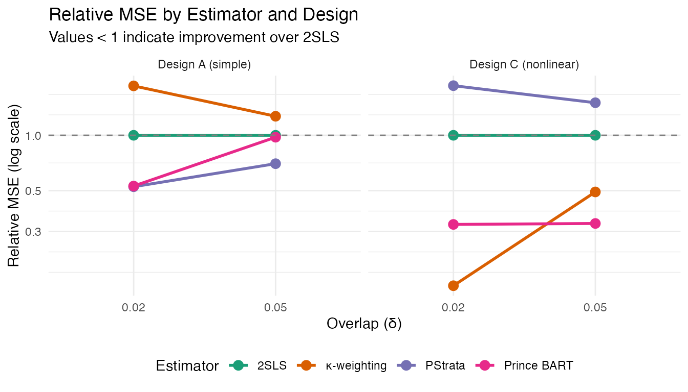
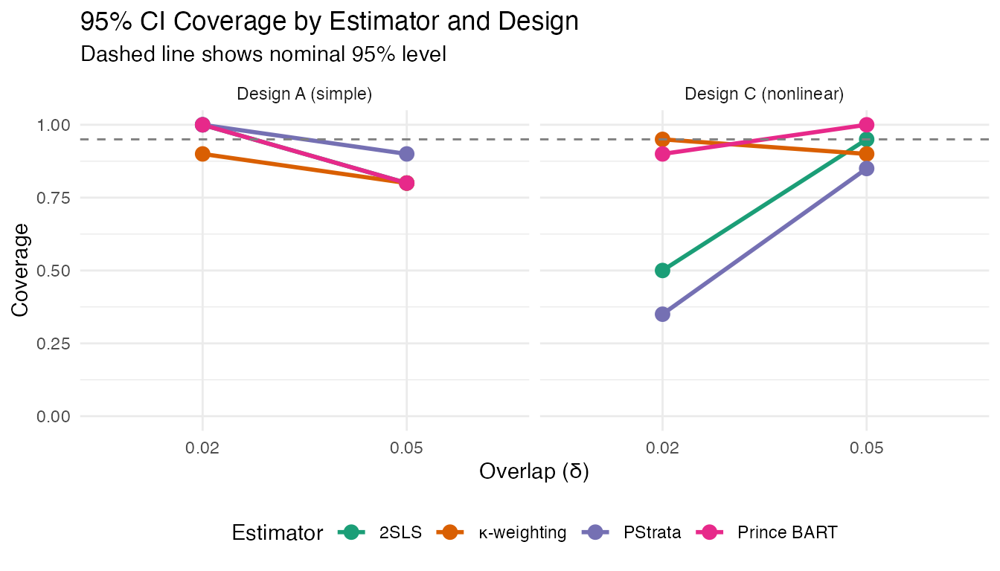

Simulation Study: Comparing LATE Estimators
princeBART authors
2026-01-22
simulation.RmdOverview
This vignette illustrates the finite-sample performance of princeBART in comparison with commonly used estimators for complier-specific causal effects (often termed LATE) under noncompliance or treatment uptake endogeneity.
The goal of the simulation is not to provide an exhaustive evaluation, but to highlight how different estimators behave across data-generating processes that vary in complexity, overlap, and treatment effect heterogeneity. In particular, the simulation contrasts settings in which linear methods such as two-stage least squares (2SLS) are well specified with settings in which nonlinearities and heterogeneous effects are present.
The results shown here are based on a reduced number of simulation iterations to keep vignette build times reasonable. The full simulation study, including additional designs and substantially more repetitions, is reported in the accompanying paper.
The following estimators are compared:
-
2SLS: Two-stage least squares with robust standard
errors
-
κ-weighting: Normalized kappa-weighting
estimator
-
PStrata: Bayesian principal stratification
- Prince BART: Principal stratification with BART (this package)
Simulation design
The data-generating processes considered here follow the simulation designs used in the princeBART paper and related methodological work. They are not constructed to favor princeBART, but instead represent settings previously used to evaluate instrumental variable estimators under noncompliance, varying in the degree of overlap, functional form, and treatment effect heterogeneity.
The designs differ in how treatment uptake depends on covariates and the instrument, and in whether the complier treatment effect is constant or nonlinear in covariates.
Data Generating Process
| Design | Compliance (γ) | Treatment Effect μ₁(x) | Propensity f(x) |
|---|---|---|---|
| A | (0, 0, 4) | Constant | Linear: 2x − 1 |
| C | (−1, 2, 2.122) | Nonlinear: (3(x+3))² | Linear: 2x − 1 |
The δ parameter controls overlap: smaller δ yields more extreme propensity scores.
library(princeBART)
library(MASS)
library(ivreg)
library(sandwich)
library(kappalate)
library(PStrata)
library(rstan)
#> Loading required package: StanHeaders
#>
#> rstan version 2.32.7 (Stan version 2.32.2)
#> For execution on a local, multicore CPU with excess RAM we recommend calling
#> options(mc.cores = parallel::detectCores()).
#> To avoid recompilation of unchanged Stan programs, we recommend calling
#> rstan_options(auto_write = TRUE)
#> For within-chain threading using `reduce_sum()` or `map_rect()` Stan functions,
#> change `threads_per_chain` option:
#> rstan_options(threads_per_chain = 1)
library(matrixStats)
library(abind)
library(ggplot2)
library(tidyverse)
#> ── Attaching core tidyverse packages ──────────────────────── tidyverse 2.0.0 ──
#> ✔ dplyr 1.1.4 ✔ readr 2.1.5
#> ✔ forcats 1.0.0 ✔ stringr 1.5.2
#> ✔ lubridate 1.9.4 ✔ tibble 3.3.0
#> ✔ purrr 1.1.0 ✔ tidyr 1.3.1
#> ── Conflicts ────────────────────────────────────────── tidyverse_conflicts() ──
#> ✖ dplyr::count() masks matrixStats::count()
#> ✖ tidyr::extract() masks rstan::extract()
#> ✖ dplyr::filter() masks stats::filter()
#> ✖ dplyr::lag() masks stats::lag()
#> ✖ dplyr::select() masks MASS::select()
#> ℹ Use the conflicted package (<http://conflicted.r-lib.org/>) to force all conflicts to become errors
library(future)
#> Warning: package 'future' was built under R version 4.4.3
library(future.apply)
#> Warning: package 'future.apply' was built under R version 4.4.3DGP setup
# Correlation structure for error terms
rho <- 0.5
SIGMA <- matrix(c(1, 0, 0, 0, 1, rho, 0, rho, 1), 3, 3)
mu <- c(0, 0, 0)
# Data generating function
create_data <- function(design, del, n) {
if (design == "A") {
gamma <- c(0, 0, 4)
f_mu1 <- \(x) dnorm(0, 0, 1)
f_zx <- \(x) (2 * x - 1) # linear propensity
} else if (design == "B") {
gamma <- c(-1, 2, 2.122)
f_mu1 <- \(x) dnorm(0, 0, 1)
f_zx <- \(x) (2 * x - 1) # linear propensity
} else if (design == "C") {
gamma <- c(-1, 2, 2.122)
f_mu1 <- \(x) (3 * (x + 3))^2 # nonlinear effect
f_zx <- \(x) (2 * x - 1) # linear propensity
} else if (design == "D") {
gamma <- c(-1, 2, 2.122)
f_mu1 <- \(x) (3 * (x + 3))^2 # nonlinear effect
f_zx <- \(x) (x + x^2 - 1) # nonlinear propensity
} else {
stop("Unknown design")
}
g0 <- log((1 - del) / del)
f_pz <- \(x) 1 / (1 + exp(-f_zx(x) * g0))
f_gd <- \(x, z) gamma[1] + x * gamma[2] + z * gamma[3]
x <- runif(n)
pz <- f_pz(x)
z <- (runif(n) < pz) |> as.integer()
E <- MASS::mvrnorm(n, mu, SIGMA)
# Potential treatments (principal strata)
d1 <- f_gd(x, 1) > E[, 3]
d0 <- f_gd(x, 0) > E[, 3]
d <- d1 * z + (1 - z) * d0
# Potential outcomes
y0 <- 0 > E[, 1]
y1_star <- f_mu1(x) + E[, 2]
y1 <- y1_star > median(y1_star)
y <- d * y1 + (1 - d) * y0
# True LATE
late <- mean((y1 - y0) * (d1 - d0)) / mean(d1 - d0)
data <- data.frame(Y = y, X = x, W = d, Z = z)
list(data = data, late = late)
}Estimator Implementations
PStrata
# PStrata model object
ps_obj <- function(data) {
s_formula <- formula(Z + W ~ X)
y_formula <- update(s_formula, Y ~ .)
PSObject(
S.formula = s_formula,
Y.formula = y_formula,
prior_intercept = prior_normal(),
Y.family = binomial(),
data = data,
strata = c(n = "00*", c = "01", a = "11*")
)
}
# Pre-compile Stan model (run once)
pstrata_compile <- function(data) {
psobj <- ps_obj(data)
ps_fit <- PStrata(psobj, cores = 1, chains = 1, iter = 20)
ps_fit$post_samples
}
# Extract fitted values from PStrata fit
fitted_pstrata <- function(ps_fit) {
beta_s <- rstan::extract(ps_fit$post_samples)$beta_S
beta_g <- rstan::extract(ps_fit$post_samples)$beta_G
psdt <- PStrata::make_standata(ps_fit$PSobject)
# Fitted outcome probabilities
mu <- apply(beta_g, 1:2, \(b) plogis(psdt$XG %*% b))
# Fitted stratum probabilities
pi <- lapply(seq_len(nrow(beta_s)), \(i) {
psdt$XS %*% t(rbind(0, beta_s[i, , ])) |>
apply(1, \(v) v - matrixStats::logSumExp(v)) |> exp() |> t()
}) |> abind::abind(along = 3) |> aperm(c(1, 3, 2))
dimnames(mu)[[3]] <- c("n", "c0", "c1", "a")
dimnames(pi)[[3]] <- c("n", "c", "a")
list(pi, mu)
}
# Compute mixed average complier effect
mixed_complier_effect <- function(fitval) {
m1_c <- fitval[[2]][, , "c1"]
m0_c <- fitval[[2]][, , "c0"]
pi_c <- fitval[[1]][, , "c"]
est <- apply((m1_c - m0_c) * pi_c, 2, sum) / apply(pi_c, 2, sum)
c(mean(est), sd(est), quantile(est, c(.025, .975)))
}
# PStrata fitter (uses pre-compiled model)
pstrata_fitter <- function(data, mcmc_iters = 200, pre_fit = NULL) {
psobj <- ps_obj(data)
ps_fit <- PStrata(psobj, cores = 1, chains = 1, iter = mcmc_iters, fit = pre_fit)
mixed_complier_effect(fitted_pstrata(ps_fit))
}Prince BART
late_draws_from_probs <- function(probs) {
d <- probs[, , "m_y1c", , drop = FALSE] - probs[, , "m_y0c", , drop = FALSE]
p_c <- 1 - probs[, , "p_a", , drop = FALSE] - probs[, , "p_n", , drop = FALSE]
as.numeric(apply(d * p_c, 1:2, sum) / apply(p_c, 1:2, sum))
}
princeb_fitter <- function(data, mcmc_iters = 200) {
fit <- princeBART::prince_BART(
formula = Y ~ X | Z | W,
data = data,
n_warmup = mcmc_iters,
n_samples = mcmc_iters,
n_chains = 1,
keep_trees = FALSE
)
draws <- late_draws_from_probs(fit$probs)
c(mean(draws), sd(draws), quantile(draws, c(0.025, 0.975)))
}Summary Functions
# Absolute bias
bias <- function(res) {
truth <- mean(res$truth)
apply(res$results[, "est", ], 1, \(x) abs(mean(x - truth)))
}
# Mean squared error
mse <- function(res) {
truth <- mean(res$truth)
apply(res$results[, "est", ], 1, \(x) mean((x - truth)^2))
}
# Relative MSE (normalized to 2SLS)
rmse <- function(res) {
m <- mse(res)
m / m[1]
}
# Coverage of 95% CI
cvg <- function(res) {
truth <- mean(res$truth)
apply(res$results[, c("ci_l", "ci_u"), ], 1,
\(x) mean(x["ci_l", ] <= truth & truth <= x["ci_u", ]))
}Run Simulation
# Simulation parameters (reduced for vignette)
m <- 20 # iterations (paper uses 400)
designs <- c("A", "C")
deltas <- c(0.02, 0.05)
ns <- 400
set.seed(0203)
# Using too many multisession workers can overwhelm laptops and increases the
# chance of interruptions/timeouts. Keep this modest by default.
workers <- min(10L, future::availableCores())
plan(multisession, workers = workers)
# Compile PStrata Stan model once
cat("Compiling PStrata model...\n")
compiled_ps <- pstrata_compile(create_data("A", 0.05, 500)$data)
# Results storage
sim_results <- list()
# Main simulation loop
for (design in designs) {
for (del in deltas) {
cat(sprintf("Running: Design %s, δ = %s\n", design, del))
results <- future_lapply(1:m, function(iter) {
sim <- create_data(design, del, ns)
late <- matrix(NA, 4, 4, dimnames = list(
c("2sls", "kappa", "pstrata", "princeb"),
c("est", "se", "ci_l", "ci_u")
))
late["2sls", ] <- ivfit_fitter(sim$data)
late["kappa", ] <- cbps_fitter(sim$data)
late["pstrata", ] <- pstrata_fitter(sim$data, 200, compiled_ps)
late["princeb", ] <- princeb_fitter(sim$data, 200)
list(estimates = late, truth = sim$late)
}, future.seed = TRUE)
# Combine results
sim_results[[paste(design, del)]] <- list(
results = abind::abind(lapply(results, \(x) x$estimates), along = 3),
truth = sapply(results, \(x) x$truth)
)
}
}
# Save for latter use
saveRDS(sim_results, file = "vignettes/sim_results.rds")Results
Compile Metrics
# Load precomputed results if available
if (file.exists(system.file("extdata", "sim_results.rds", package = "princeBART"))) {
sim_results <- readRDS(system.file("extdata", "sim_results.rds", package = "princeBART"))
}
results_df <- expand.grid(design = designs, delta = deltas) |>
rowwise() |>
mutate(res = list(sim_results[[paste(design, delta)]])) |>
mutate(
rmse_vals = list(rmse(res)),
cvg_vals = list(cvg(res)),
bias_vals = list(bias(res))
) |>
unnest(c(rmse_vals, cvg_vals, bias_vals)) |>
mutate(
estimator = rep(
c("2SLS", "κ-weighting", "PStrata", "Prince BART"), n() / 4
) |> factor(
levels = c("2SLS", "κ-weighting", "PStrata", "Prince BART")
),
design_label = factor(design,
levels = c("A", "C"),
labels = c("Design A (simple)", "Design C (nonlinear)")
)
)Relative MSE Plot
ggplot(results_df, aes(x = factor(delta), y = rmse_vals,
color = estimator, group = estimator)) +
geom_line(linewidth = 1) +
geom_point(size = 3) +
geom_hline(yintercept = 1, linetype = "dashed", color = "gray50") +
facet_wrap(~ design_label) +
scale_y_log10() +
labs(
title = "Relative MSE by Estimator and Design",
subtitle = "Values < 1 indicate improvement over 2SLS",
x = "Overlap (δ)",
y = "Relative MSE (log scale)",
color = "Estimator"
) +
theme_minimal() +
scale_color_brewer(palette = "Dark2") +
theme(legend.position = "bottom")
Coverage Plot
ggplot(results_df, aes(x = factor(delta), y = cvg_vals,
color = estimator, group = estimator)) +
geom_line(linewidth = 1) +
geom_point(size = 3) +
geom_hline(yintercept = 0.95, linetype = "dashed", color = "gray50") +
facet_wrap(~ design_label) +
scale_y_continuous(limits = c(0, 1)) +
labs(
title = "95% CI Coverage by Estimator and Design",
subtitle = "Dashed line shows nominal 95% level",
x = "Overlap (δ)",
y = "Coverage",
color = "Estimator"
) +
theme_minimal() +
scale_color_brewer(palette = "Dark2") +
theme(legend.position = "bottom")
Summary Table
results_df |>
select(design, delta, estimator, rmse_vals, cvg_vals, bias_vals) |>
rename(
Design = design,
`δ` = delta,
Estimator = estimator,
`Rel. MSE` = rmse_vals,
Coverage = cvg_vals,
`|Bias|` = bias_vals
) |>
knitr::kable(digits = 3)| Design | δ | Estimator | Rel. MSE | Coverage | |Bias| |
|---|---|---|---|---|---|
| A | 0.02 | 2SLS | 1.000 | 1.00 | 0.003 |
| A | 0.02 | κ-weighting | 1.856 | 0.90 | 0.024 |
| A | 0.02 | PStrata | 0.525 | 1.00 | 0.026 |
| A | 0.02 | Prince BART | 0.530 | 1.00 | 0.042 |
| C | 0.02 | 2SLS | 1.000 | 0.50 | 0.242 |
| C | 0.02 | κ-weighting | 0.152 | 0.95 | 0.003 |
| C | 0.02 | PStrata | 1.861 | 0.35 | 0.339 |
| C | 0.02 | Prince BART | 0.328 | 0.90 | 0.085 |
| A | 0.05 | 2SLS | 1.000 | 0.80 | 0.084 |
| A | 0.05 | κ-weighting | 1.269 | 0.80 | 0.064 |
| A | 0.05 | PStrata | 0.701 | 0.90 | 0.084 |
| A | 0.05 | Prince BART | 0.976 | 0.80 | 0.078 |
| C | 0.05 | 2SLS | 1.000 | 0.95 | 0.101 |
| C | 0.05 | κ-weighting | 0.492 | 0.90 | 0.019 |
| C | 0.05 | PStrata | 1.503 | 0.85 | 0.144 |
| C | 0.05 | Prince BART | 0.332 | 1.00 | 0.008 |
Interpretation
The simulation illustrates that:
- PStrata performs better than 2SLS in the linear case (Design A)
- κ-weighting performs better than 2SLS in the nonlinear case (Design C)
- Prince BART outperforms 2SLS in both scenarios, showing robustness to design complexity.
These results should be interpreted as illustrative rather than definitive, and are intended to complement the more extensive simulation results reported in the paper.